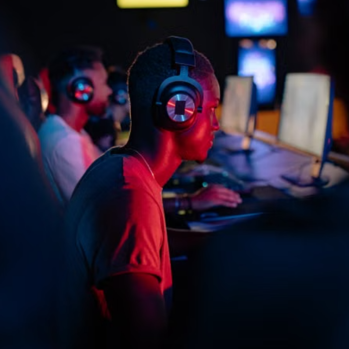
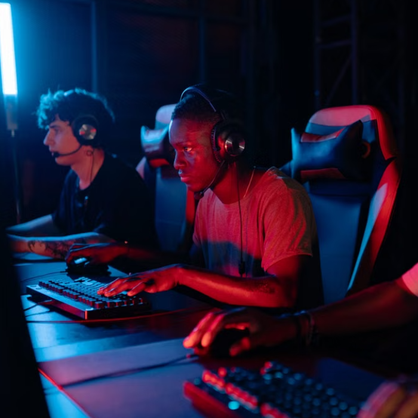

* ABOUT US *
Founded in 2023 in the heart of Johannesburg, Next Level Gaming & Esports Arena was built by Jason Naidoo, an avid gamer who saw a major gap in the local gaming scene. While South Africa's passion for Esports and gaming was rapidly growing, access to high-performance equipment, specialized arena setups, and organized competitive events remained limited. Driven to solve this, Jason set out to build a modern venue that bridges the gap, offering a space where players of all skill levels can access top-tier gear, join competitive tournaments, and share their passion with a vibrant community.
BUILT BY GAMERS. MADE FOR EVERYONE.


* OUR MISSION *
We are dedicated to driving the expansion of South Africa's Esports and gaming ecosystem. By combining modern hardware, inclusive community spaces, and competitive events, Next Level provides an accessible platform where casual players can socialise and aspiring pro-gamers can hone their skills.